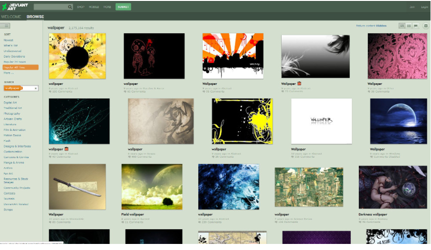
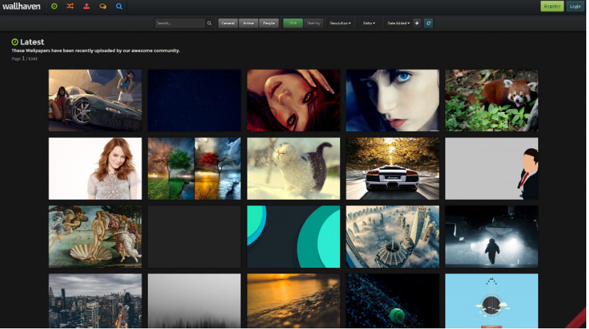
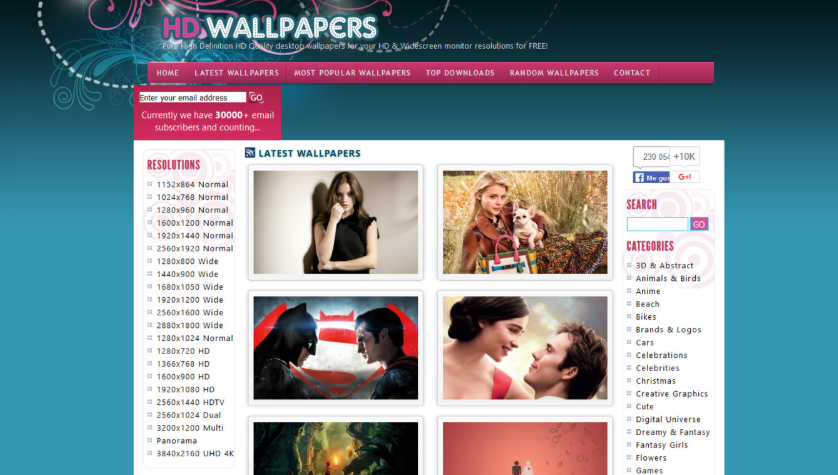
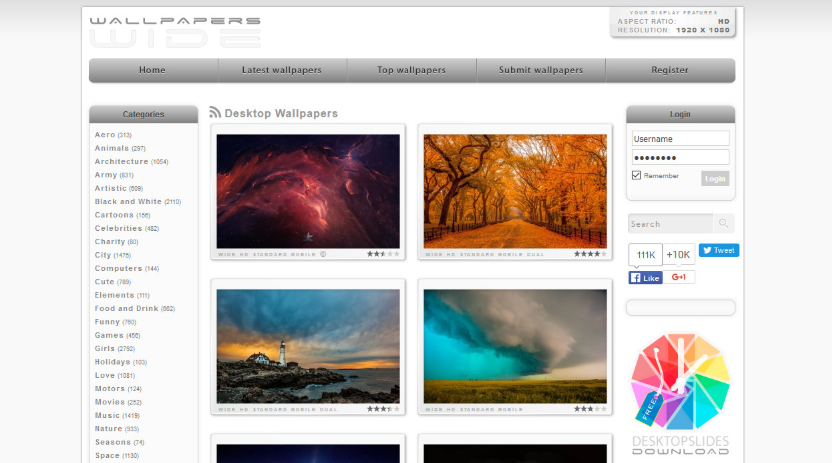
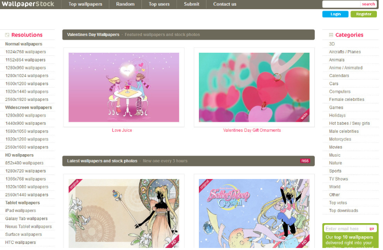

Fondos de pantalla HD: 5 webs con los mejores fondos gratis

Hay dos tipos de persona en este mundo, los que cambian el fondo de pantalla de su ordenador cada dos por tres y los que se aferran a uno y no lo sueltan hasta que le salen telarañas. Seas del tipo que seas una cosa está clara, tarde o temprano tendrás que visitar alguna página en la que buscar la próxima imagen con la que decorarás el escritorio de tu ordenador.
Por eso, para facilitarte horas de búsqueda hoy hemos hecho una recopilación con 31 webs con los mejores fondos gratis en las que puedes encontrar fondos de pantalla en HD. Tenemos de todo, desde páginas especializadas con cientos de miles de opciones de búsqueda hasta otras mucho más sencilla, pasando por otras en las que quizá nunca pensaste que podrías encontrarlos.
DeviantArt
DeviantArt no es una página de fondos de pantalla propiamente dicha, pero sí una en la que ilustradores y manitas del Photoshop suben sus trabajos. Basta con escribir la palabra Wallpaper en su buscador para acceder a un amplio repertorio de fondos únicos y exclusivos creados por su comunidad.
Wallhaven
Wallbase fue durante años una de las mejores páginas en las que encontrar fondos de pantalla para todos los gustos valiéndose de completísimas herramientas de búsqueda. Pero la página desapareció, y de sus cenizas nació un Wallhaven que ya lleva varios años buscado recuperar la esencia perdida. Podremos realizar búsquedas y ordenar los resultados por temática, tamaño y ratio.
HD Wallpapers
Su nombre lo dice todo, HD Wallpapers es una página dedicada a los fondos de pantalla en alta definición, en la que podrás navegar por sus secciones de los más populares, los últimos publicados o una selección aleatoria. Ojo porque no se limita a los fondos Full HD, ya que también tiene unos cuantos fondos en 4K.
WallpapersWide
Con un diseño que apuesta por el minimalismo, Wallpapers Wide te ofrece miles de fondos de pantalla ordenados en diferentes categorías y con tamaños que van desde los pensados para móviles hasta los destinados a las pantallas más grandes. Por si tenemos dudas de lo que necesitamos, arriba a la derecha veremos un cuadro en el que se nos dice la resolución de nuestra pantalla.
Wallpaper Stock
Otra página con diseño sencillo, pero en el que podremos encontrar una amplia variedad de imágenes en HD y 2K para nuestros ordenadores. Además de algo más de 20 temáticas, los fondos de Wallpaper Stock también están ordenados por sus distintas resoluciones. También tiene una pequeña selección de fondos para móviles.